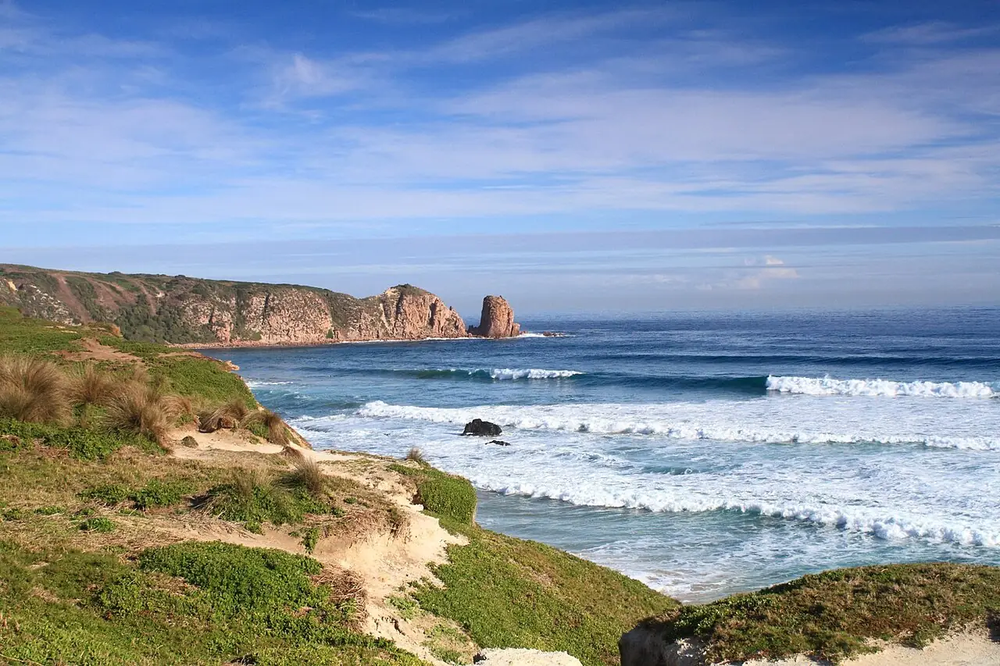

Cape Woolamai — Woolamai Beach
Phillip Island, Victoria, Australie · surf

Plage de surf exposée de Phillip Island, qui reçoit de plein fouet la houle du détroit de Bass. Les vagues y sont souvent puissantes et la plage a la réputation d’être l’une des plus dangereuses de l’État de Victoria.
- Lieu
- Phillip Island, Victoria, Australie
- Niveau
- Expert
- Activités
- surf
- Type d'eau
- Mer / océan
- Coordonnées
- -38.53, 145.34 (position approximative du secteur)
Dangers à connaître
- Courants d’arrachement très puissants : baignade déconseillée hors de la zone surveillée.
- Eau froide toute l’année : combinaison épaisse nécessaire.
Le conseil d'Ocean Buddy
Surfe uniquement si tu es à l’aise dans les courants forts, et près de la zone surveillée par le club de sauvetage en saison.
Ouvrir dans Ocean Buddy Télécharger sur l'App Store
Source : Fiche Ocean Buddy · septembre 2026 · à vérifier localement.